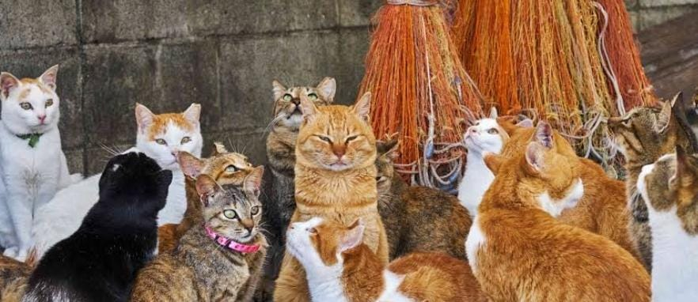

Instagram
Gatolandia
Isla de Gatos
Al sur de Japón, hay una isla que es el sueño de todos los amantes de los gatos: Aoshima. Esta es su historia y los mejores consejos para visitarla. Si eres un amante de los felinos, probablemente has oído de Aoshima, la isla al sur de Japón que tiene más gatos que habitantes humanos. La pequeña isla de Aoshima, ubicada al sur de Japón, ha llamado la atención de turistas de todo el mundo. La gran peculiaridad de este lugar es que está habitada por más de 120 felinos. Actualmente esta es una de las zonas del mundo con más gatos por metro cuadrado.

Los precios de los vuelos redondos están entre MXN$812 y MXN$4,494, mientras que los vuelos sencillos a Los Gatos los encuentras desde MXN$338. Toma en cuenta que si reservas un vuelo directo, el precio podría ser más alto, aunque ahorrarías tiempo.